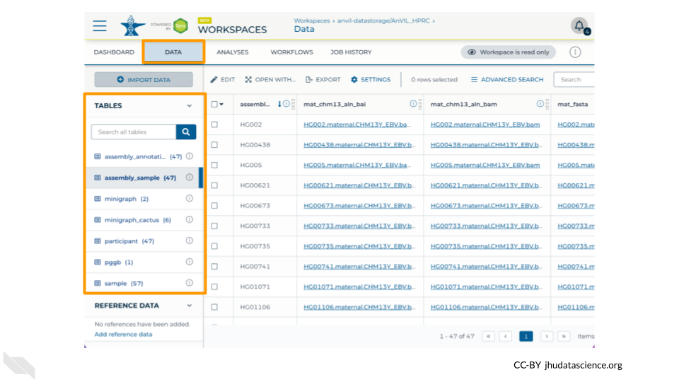
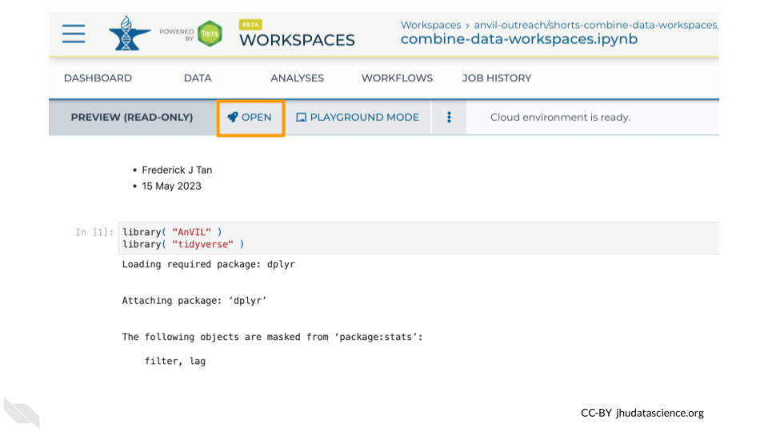
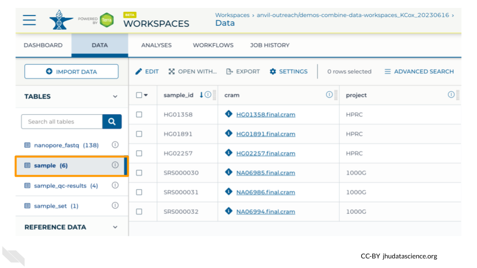

7 Exercises
The following exercises will walk you through the process of finding datasets that are stored in AnVIL Workspaces and bringing that data into your own Workspace so that you can analyze it.
To follow along with these exercises, you will need to complete the steps described in the Preparation guide for this demo.
7.1 Explore Dataset Catalog
First we will take a look at the AnVIL Dataset Catalog. Here you can browse the datasets available on AnVIL.
Exercise
Use a web browser to navigate to anvilproject.org/data/ and answer the following questions.
Q1. Which Consortium has the most participants?
- You can click on a column name to sort by that column.
- Click again to switch between ascending and descending.
Q2. Where would you find data from the Genotype-Tissue Expression (GTEx) Project?
- You can use the filters on the left to find specific datasets. Click on either the Consortium or the Study filter to search for GTEx data.
Q3. How many Workspaces have consent code NRES (No REStrictions on data use)?
- You can use the filters on the left to browse and narrow down on datasets that fit your needs. Click on the Consent Code filter to select for datasets that you can access.
Now you know how to find AnVIL datasets! To access the data in these datasets, you will need to access the Terra Workspace where the data is stored. You can find links to the Terra Workspaces in the Workspaces tab.
Note that, if a Workspace contains protected data, you will need to obtain the appropriate permissions before you can open the Workspace. For these GTEx datasets, AnVIL_GTEx_public_data (with consent code NRES) is available to anyone on AnVIL, but other GTEx Workspaces require permission to access.
7.2 Explore HPRC Workspace
Next we will explore one of the Workspaces from the AnVIL Dataset Catalog, so you can see where the data lives. For this exercise, we will look at data from the Human Pangenome Reference Consortium.
You can find the Workspace that contains the data by searching for the “HPRC” Consortium in the AnVIL Dataset Catalog and clicking on the Terra Workspace link, or you can navigate there directly through this link: https://anvil.terra.bio/#workspaces/anvil-datastorage/AnVIL_HPRC.

7.2.1 What is a Workspace?
Workspaces are the building blocks of projects in Terra. Inside a Workspace, you can run analyses, launch interactive tools like RStudio and Galaxy, store data, and share results. The AnVIL_HPRC Workspace is being used to store and share data from the Human Pangenome Reference Consortium.
Note that, since you are only a “Reader”, you will be unable to do any computations directly in this Workspace. To run analyses, you will need a Workspace of your own.
Workspaces can serve different purposes. For example, it’s often useful to use one Workspace just for organizing primary data, and then to carry out analyses in a separate Workspace. Storing data in a standalone Workspace helps keep it clean and organized, since it won’t get cluttered up with results and intermediate files from your analyses. It also ensures you can easily see and manage who has access to the data, and allows multiple AnVIL users to use the data without getting in each others’ way.
7.2.2 Dashboard
When you first open a Workspace, you will be directed to the Dashboard tab. The Dashboard is like a README for the Workspace - it should contain information to help you understand the purpose and organization of the Workspace. On the right, you can see some basic information about the Workspace such as the usernames of the Owners as well as your permission level for the Workspace. The left side typically contains a description of the Workspace’s contents and purpose.
Exercise
Q1. What three strategies were used to build pangenomes?
- Look through the Workspace’s description to see what information has been provided about the data in this Workspace.
7.2.3 Data
The Data tab contains all the files associated with the Workspace - data, metadata, workflow outputs, etc. Terra provides Data Tables to help organize data and results.

Exercise
Take a minute to look through the Data Tables for the AnVIL_HPRC Workspace.
Q2. What demographic information is available in the Data Table named participant?
Q3. What types of files are linked to in the Data Table named assembly_sample?
- If you’re not sure what these files are from looking at the column and file names, check the Workspace Dashboard for more information about the assemblies.
A key feature of Terra is that Data Tables can link to files in other Workspaces or even files that live outside of Terra. This means that you don’t need to maintain your own copy of AnVIL datasets; you can simply link to the data from a Data Table within your own Workspace to use it in your workflows.
7.3 Combine Data Workspace
Next we will go over how to set up a Data Table so that you can use data from another Workspace in your own analysis.
For this exercise, you will need your own copy of the demos-combine-data-workspaces Workspace. If you have not already done so, follow the instructions in the Preparation section to clone a copy of the Workspace now.
7.3.1 Open your Workspace
To get started, navigate to your cloned copy of demos-combine-data-workspaces.
You can find your Workspace in Terra by clicking on “Workspaces” in the dropdown menu, or you can go there directly at anvil.terra.bio/#workspaces. Once there, you should see your Workspace under the “MY WORKSPACES” tab. It may also show up in your recently viewed Workspaces. Click on the Workspace name to open it. Make sure you are in your copy of the Workspace. If you are in the original Workspace, you will not have permission to start up Jupyter and run commands.
7.3.2 Open Jupyter Notebook
There are multiple ways to manage Data Tables on AnVIL; for this exercise we will use the Anvil R package, which we will run using a Jupyter cloud environment. The AnVIL package provides a wide range of functions for programmatically interacting with AnVIL.
To help you get started, we have provided a copy of a Jupyter Notebook that uses the AnVIL package to create Data Tables linking out to data in another Workspace. For this exercise, you will make a couple of adjustments to the Notebook, so that it links properly to your Workspace (instead of the original Workspace).
Within your Workspace, the ANALYSIS tab holds your Notebooks (Jupyter and R Markdown).
By clicking on a Notebook, you can preview a static copy of the Notebook. Clicking the “OPEN” button launches the Notebook in a cloud environment so that you can edit and run code. (The “PLAYGROUND” option also lets you edit and run code, but your changes will not be saved.)

Exercise
In your Workspace, navigate to the “ANALYSIS” tab.
Click on combine-data-workspaces.ipynb to view the Notebook for this exercise, and click the “Open” button so you can edit and run it.
- The Notebook will launch quickly if you already have a Jupyter Cloud Environment set up.
- If Jupyter is not already set up, the configuration menu will appear. The default settings are fine for this exercise, so scroll to the bottom and click “Create”. It will take a few minutes for Jupyter to start up.
This Notebook has four code cells that you will run, after making some edits.
7.3.3 Load Packages
The first code cell loads R packages that are needed for this exercise. You do not need to make any adjustments here.
Exercise
1. Click on the first code cell, then click the Run button to load the packages.
7.3.4 Retrieve original file locations
The next two cells find the links to the original data. Here we are bringing in data from two different Workspaces, AnVIL_HPRC and 1000G-high-coverage-2019, which contains data from the Human Pangenome Reference Consortium and the 1000 Genomes Project, respectively.
avworkspace( "anvil-datastorage/AnVIL_HPRC" )tells the AnVIL package what Workspace to accessdf_sample_HPRC <- avtable( "sample" ) %>%tells it to look at the table named “sample”.- The subsequent commands select which columns and rows to import into our Workspace. These commands differ between the two code blocks because the Tables in the two source Workspaces have different structures.
slice_head( n=2 )gets only the first two samples.
It’s often a good idea to start off a new analysis by working with just a few samples. This can help you minimize wasted time and computing expenses while you figure out your pipeline, and can also help you estimate what your costs will be for processing larger dataset before committing to a large Workflow run.
To keep this exercise short and cheap, we’re just importing a few samples into your Workspace, but when working on your own projects you can use the same process to import whole tables.
It does not cost anything to add these samples to your Data Table, since you are not storing them in your own Workspace, only linking to them in another Workspace. Costs come into it when you start running analyses on the samples (as we will in a later exercise), so take care not to unintentionally run an expensive analysis on a large table of samples.
Exercise
2. Modify the code in both cells to get 3 samples instead of 2, and run each cell.
You should see a table listing out the samples appear below each cell. Confirm that there are 3 samples in each table.
This step chose the samples we want from the original Workspace, but has not yet created a Data Table that links to them in your own Workspace.
7.3.5 Exported combined Data Table
The next code block accomplishes a few things:
- The
bind_rows()command combines data from the two different Workspaces into a single data table, so that you can conveniently work with all the data at once in your Workflows. It also adds a column to keep track of which samples came from which original Workspace. avtable_import( entity="sample_id", namespace="anvil-outreach", name="demos-combine-data-workspaces" )creates a Data Table in your Workspace that links to the original data, so that you can easily use it in your analyses. This is the line that we need to modify so that the Data Table is created in your Workspace.
Exercise
You will need two pieces of information so that the AnVIL package can locate your Workspace to create the new Data Table:
- The
namespace(the Workspace’s Billing Project) - The Workspace
name
You can find both of these at the end of the URL for your Workspace which is structured like this:
anvil.terra.bio/#workspaces/namespace/nameFor example, for this Workspace:
https://anvil.terra.bio/#workspaces/anvil-outreach/demos-combine-data-workspaces_KCox_20230616- The
namespaceisanvil-outreach - The
nameisdemos-combine-data-workspaces_KCox_20230616
3. Modify the code in your Notebook so that it points to your Workspace, and run the cell.
If this command is successful, you will not see your new table in your Notebook, but if you look in the Data tab of your Workspace you should now see the sample Data Table has 6 rows in it.
7.3.6 Session Info
It’s generally a good idea to document information about the packages (and their versions) you used while running the analysis. The last codeblock uses the sessionInfo() command to do just that.
7.3.7 View your new Data Table
As a last step, take a look at the Data Tab in your Workspace. You should now see a table named sample that contains 6 rows - 3 with project “HPRC” and 3 with project “1000G”.

Note that for this exercise we preloaded the Workspace with 4 samples - if you only see 4 rows then double check your Notebook:
- Did you remember to “Run” each code cell after you edited it?
- Did you change the number of samples to link from 2 to 3 for each table?
- Did you update the
avtable_importcommand to point to your Workspace?
If you run into any trouble, don’t worry! You can carry out the remaining exercises using the 4 samples we provided for you, and you can visit our community support forum at help.anvilproject.org with any questions.
7.4 Explore Dockstore Workflows
Once you have set up Data Tables in your Workspace, you can analyze the data using Workflows. To introduce you to Workflows, we will first take a look at the AnVIL Workflows available through Dockstore.
The Dockstore platform is a repository for scalable bioinformatics tools and workflows.
You can find Workflows for AnVIL by clicking on the “Organizations” tab and searching for AnVIL.
Here you can find many Workflows which you can import into your AnVIL Workspace to use in your own analyses. These Workflows are organized into collections to make them easier to find.
Exercise
Go to dockstore.org, find the AnVIL Organization, and take a look at the Workflows that are available.
Q1. How many GATK4 workflows focus on CNVs?
Now let’s take a look at the qc-analysis-pipeline, which we will be running on our data.
Under the AnVIL Organization is a collection called “Quality Control Workflows”. Here you can find the qc-analysis-pipeline.
Clicking on the name of the Workflow will bring you to a page with detailed information about the Workflow, including the .wdl files for the Workflow.
From here, you can import the Workflow into your Workspace using the Launch button. Don’t do this right now, or, if you do, import it with a different name (not qc-analysis-pipeline) so you don’t overwrite the Workflow that already exists in your Workspace.
There are some additional configuration steps that are needed to make sure the Workflow is set up properly to run on the desired files in your Workspace. For the sake of time, we have provided a preconfigured version of this Workflow in the Workspace you cloned. You can learn more about configuring Workflows in the Terra Documentation on Workflows.
7.5 Run qc-analysis-pipeline
For our final exercise, we will run the qc-analysis-pipeline on the data we retrieved. Note that Workflow runs can take a few hours to go through, so this exercise will walk you through submitting it, but you will need to check back later for the results. You should receive an email when it’s done (at the email address you use for AnVIL).
AnVIL Workspaces have two tabs dedicated to Workflows
- The “WORKFLOWS” tab is where you configure and submit Workflow runs for processing.
- The “JOB HISTORY” tab is where you monitor the progress of submitted Workflows.
Under the “WORKFLOWS” tab you will see any Workflows that have been imported into your Workspace. If you import a Workflow from Dockstore (using the Launch with AnVIL button) or from another Workspace, you will see it here. For this exercise, the qc-analysis-pipeline has already been imported for you.
Exercise
Go to your Workspace on AnVIL and open the “WORKFLOWS” tab.
1. Click on the qc-analysis-pipeline card to configure the Workflow.
2. Confirm settings
- “Run workflow(s) with inputs defined by data table” is selected
- The root entity type should be “sample”. This means it will look at the “sample” Data Table to find inputs.
3. Choose samples - click the “SELECT DATA” button and check the samples you want to run the Workflow on. You should see 6 samples.
4. Click the “RUN ANALYSIS” button.
You can view the status of your Workflow run by navigating to the “JOB HISTORY” tab. You can see more details by clicking on the name of the Workflow in the “Submission” column.
Once your Workflow run is complete, you will be able to view the results in your Workspace’s “DATA” tab.